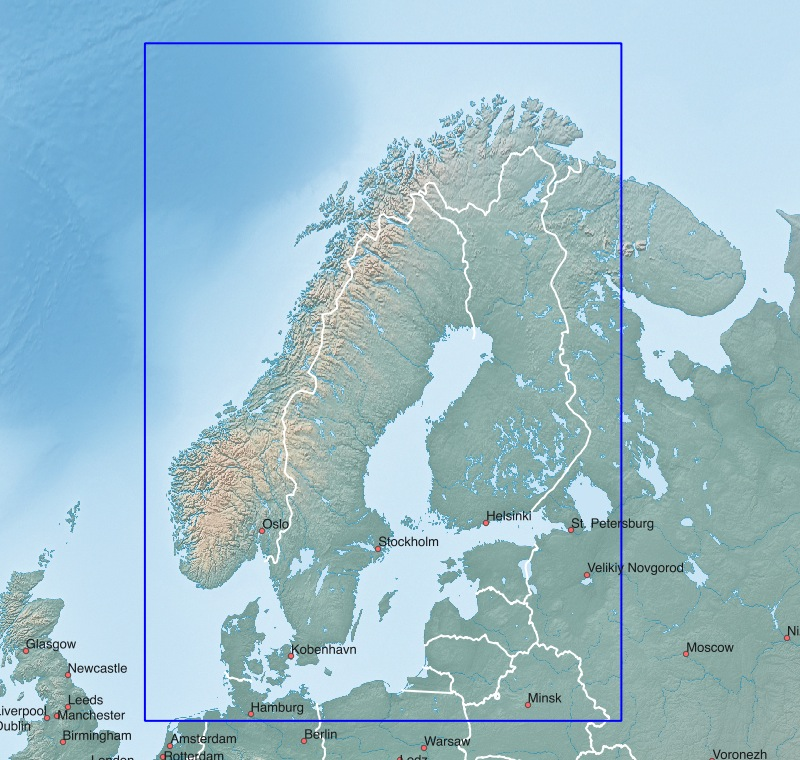
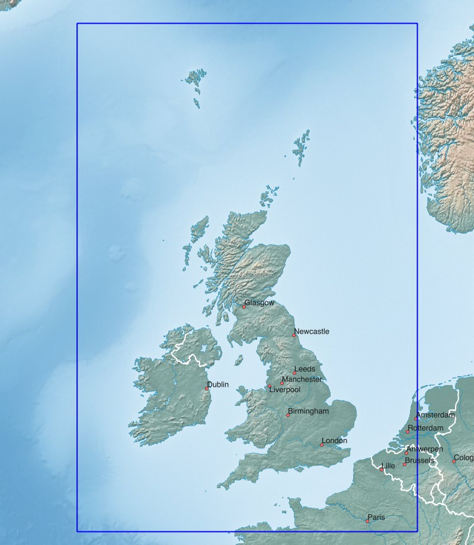
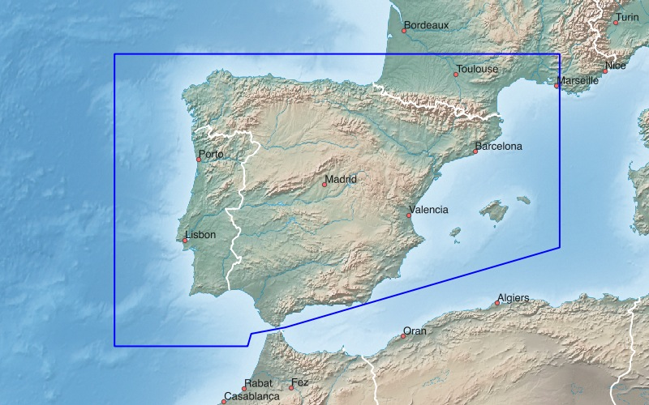
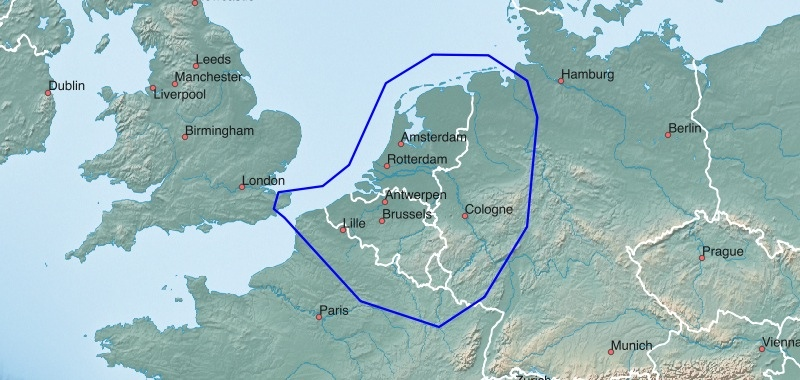
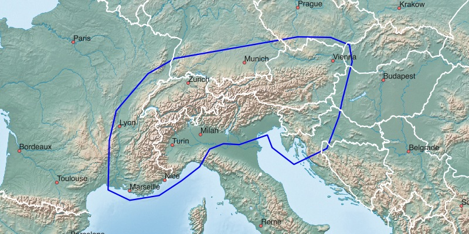
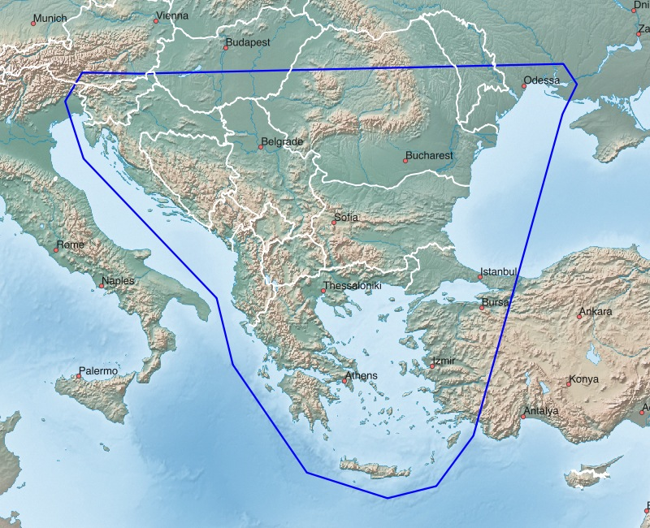

Dänemark (DNK), Norwegen (NOR), Schweden (SWE), Finnland (FIN) [Skandinavische Staaten]
Russische Exklave Kaliningrad, Litauen (LTU), Lettland (LVA), Estland (EST) [Baltische Staaten]:
Garmin GPS-Gerät: Skandinavische + Baltische Staaten - Installationsimage für Micro-SD-Karte (1.4 GB)
Microsoft Windows: Skandinavische + Baltische Staaten - Installationsarchiv für Garmin BaseCamp (1.4 GB)
Apple Mac OS X: Skandinavische + Baltische Staaten - Installationsarchiv für Garmin BaseCamp (1.4 GB)
Alle Betriebssysteme: Skandinavische + Baltische Staaten - Imageverzeichnis für QLandkarte (1.4 GB)

Vereinigtes Königreich Großbritannien und Nordirland (GBR), Irland (IRL), Färöer (FRO):
Garmin GPS-Gerät: Großbritannien + Irland - Installationsimage für Micro-SD-Karte (1.1 GB)
Microsoft Windows: Großbritannien + Irland - Installationsarchiv für Garmin BaseCamp (1.1 GB)
Apple Mac OS X: Großbritannien + Irland - Installationsarchiv für Garmin BaseCamp (1.1 GB)
Alle Betriebssysteme: Großbritannien + Irland - Imageverzeichnis für QLandkarte (1.1 GB)

Spanien (ESP), Portugal (PRT) [Iberische Halbinsel, Pyrenäen, Balearen]:
Garmin GPS-Gerät: Spanien + Portugal - Installationsimage für Micro-SD-Karte (0.9 GB)
Microsoft Windows: Spanien + Portugal - Installationsarchiv für Garmin BaseCamp (0.9 GB)
Apple Mac OS X: Spanien + Portugal - Installationsarchiv für Garmin BaseCamp (0.9 GB)
Alle Betriebssysteme: Spanien + Portugal - Imageverzeichnis für QLandkarte (0.9 GB)

Belgien (BEL), Niederlande (NLD), Luxembourg (LUX) [BeNeLux-Staaten]:
Garmin GPS-Gerät: BeNeLux-Staaten - Installationsimage für Micro-SD-Karte (1.0 GB)
Microsoft Windows: BeNeLux-Staaten - Installationsarchiv für Garmin BaseCamp (1.0 GB)
Apple Mac OS X: BeNeLux-Staaten - Installationsarchiv für Garmin BaseCamp (1.0 GB)
Alle Betriebssysteme: BeNeLux-Staaten - Imageverzeichnis für QLandkarte (1.0 GB)

Alpen [Schweiz (CHE), Österreich (AUT), Slowenien (SVN)]:
Garmin GPS-Gerät: Großraum Alpen - Installationsimage für Micro-SD-Karte (1.8 GB)
Microsoft Windows: Großraum Alpen - Installationsarchiv für Garmin BaseCamp (1.8 GB)
Apple Mac OS X: Großraum Alpen - Installationsarchiv für Garmin BaseCamp (1.8 GB)
Alle Betriebssysteme: Großraum Alpen - Imageverzeichnis für QLandkarte (1.8 GB)

Pyrenäen:
Garmin GPS-Gerät: Pyrenäen - Installationsimage für Micro-SD-Karte (0.2 GB)
Microsoft Windows: Pyrenäen - Installationsarchiv für Garmin BaseCamp (0.2 GB)
Apple Mac OS X: Pyrenäen - Installationsarchiv für Garmin BaseCamp (0.2 GB)
Alle Betriebssysteme: Pyrenäen - Imageverzeichnis für QLandkarte (0.2 GB)

Karpaten:
Garmin GPS-Gerät: Karpaten - Installationsimage für Micro-SD-Karte (0.5 GB)
Microsoft Windows: Karpaten - Installationsarchiv für Garmin BaseCamp (0.5 GB)
Apple Mac OS X: Karpaten - Installationsarchiv für Garmin BaseCamp (0.5 GB)
Alle Betriebssysteme: Karpaten - Imageverzeichnis für QLandkarte (0.5 GB)

Balkan:
Garmin GPS-Gerät: Balkan - Installationsimage für Micro-SD-Karte (0.5 GB)
Microsoft Windows: Balkan - Installationsarchiv für Garmin BaseCamp (0.5 GB)
Apple Mac OS X: Balkan - Installationsarchiv für Garmin BaseCamp (0.5 GB)
Alle Betriebssysteme: Balkan - Imageverzeichnis für QLandkarte (0.5 GB)
Viel Freude an den Freizeitkarten ... und viele interessante Touren damit.